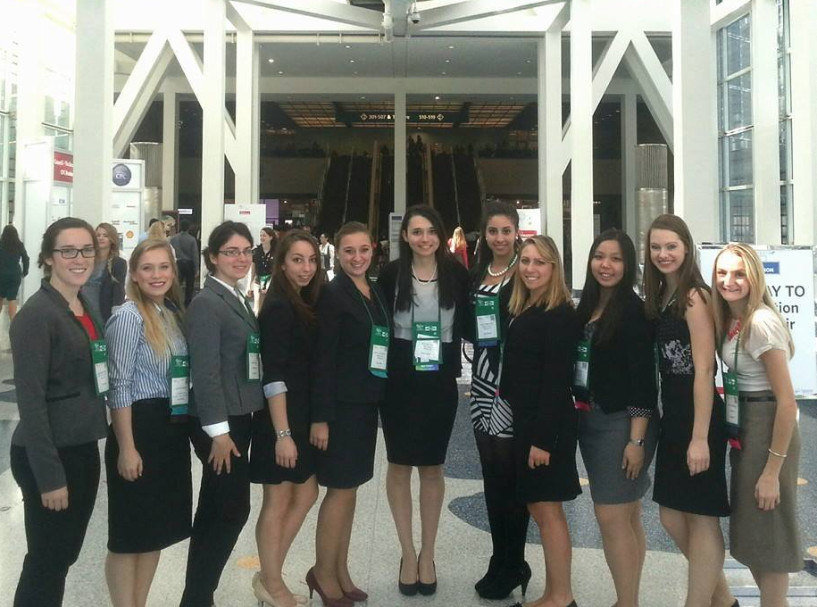

I am currently a rising senior double majoring in Electrical Engineering and Computer Science. The summer after my freshman year, my high grades caught the eyes of a faculty director of a program called iSENSE. I was offered a co-op (and later a part-time job) developing educational Android apps that upload data to iSENSE, a web-system designed to help middle and high-school students and teachers to share data and collaboratively investigate science questions.
Throughout the co-op I got to travel to high-schools all over the state to demo my apps. I ran workshops that spark an interest in computer science in high school students. I loved seeing the enthusiasm and interest in student’s eyes. During my sophomore year, I began to get more involved around school and joined a few student organizations.
A short time after joining, I was nominated for leadership positions. I became the vice-president of two student organizations: SWE (Society of Women Engineers) and iEEE (Institute of Electrical and Electronics Engineers). Throughout my time as vice-president, I helped organize professional development, philanthropy, social and outreach events. I love recruiting students and raising awareness to Engineering. I currently serve as the President of SWE.
Being part of SWE and IEEE gave me the power to reach out to so many students and influence the lives of so many people. I want to be that person who leaves a mark on people’s lives. For the remainder of college, I hope to continue to study the subjects I love and to continue to excel in promoting them. After getting my bachelors degree, I want to work for a company that benefits people’s lives.
